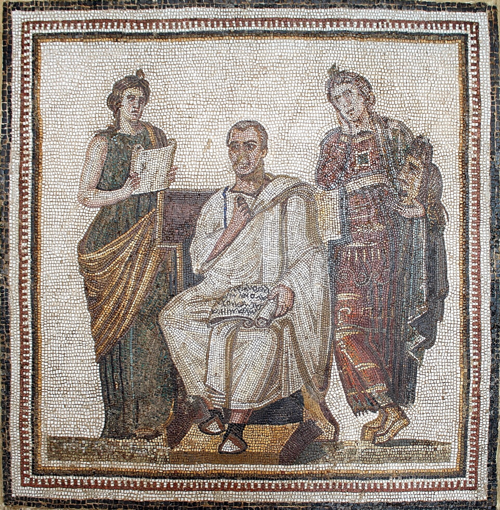

<!doctype html>
<html lang="en">
<head>
<meta charset="utf-8">
<meta name="viewport" content="width=device-width, initial-scale=1">
<title>readgraph · Virgil</title>
<link rel="preconnect" href="https://fonts.googleapis.com"><link rel="preconnect" href="https://fonts.gstatic.com" crossorigin>
<link href="https://fonts.googleapis.com/css2?family=EB+Garamond:wght@500&family=Inter:wght@400;500;600&display=swap" rel="stylesheet">
<link rel="stylesheet" href="app.css">
<script src="https://cdnjs.cloudflare.com/ajax/libs/cytoscape/3.30.2/cytoscape.min.js"></script>
<style>
  /* the rail's last panel (the connections map) grows, so both columns end on one line */
  .detail { display: grid; grid-template-columns: minmax(0, 1fr) 384px; gap: var(--gap); align-items: stretch; }
  .rail .ego-panel { flex: 1; display: flex; flex-direction: column; }
  .three { display: grid; grid-template-columns: repeat(3, minmax(0, 1fr)); gap: var(--gap); }
  .three .source { grid-template-rows: auto auto auto 1fr; }
  .col { display: flex; flex-direction: column; gap: var(--gap); min-width: 0; }
  .about { display: grid; grid-template-columns: 220px minmax(0, 1fr); gap: 24px; }
  .about .portrait { border-radius: var(--radius-inner); overflow: hidden; aspect-ratio: 1; background: var(--raised); }
  .about .portrait img { width: 100%; height: 100%; object-fit: cover; }
  .about .summary { font-size: 16px; line-height: 24px; }
  .facts { display: grid; grid-template-columns: 64px 1fr; gap: 8px 16px; margin: 18px 0 0; }
  .facts dt { color: var(--faint); }
  .facts dd { margin: 0; }
  .caption { margin-top: 16px; }
  .look { display: grid; grid-template-columns: repeat(3, minmax(0, 1fr)); gap: var(--gap); }
  .look figure { margin: 0; }
  .look .frame { aspect-ratio: 1; border-radius: var(--radius-inner); overflow: hidden; background: var(--raised); }
  .look img { width: 100%; height: 100%; object-fit: cover; transition: transform .4s ease; }
  .look a:hover img { transform: scale(1.03); }
  .look figcaption { margin-top: 10px; }
  .pair { display: grid; grid-template-columns: minmax(0, 1fr) minmax(0, 1fr); gap: var(--gap); align-items: start; }
  .notes { list-style: none; margin: 0; padding: 0; display: flex; flex-direction: column; }
  .notes li { display: grid; grid-template-columns: 72px 1fr; gap: 12px; padding: 12px 0; border-top: 1px solid var(--rule); }
  .notes li:first-child { border-top: 0; padding-top: 0; }
  .notes .c { color: var(--faint); }
  .notes li.now .c { color: var(--accent); }
  .notes + .empty-line { margin-top: 12px; }
  #ego { flex: 1; min-height: 300px; margin: 0 calc(-1 * var(--pad)); }
  .ctx b { font-weight: 500; display: block; margin-bottom: 2px; }
  .credit { margin-top: 28px; color: var(--faint); font-size: var(--fs-small); }
  .credit a { text-decoration: underline; text-underline-offset: 2px; }
  @media (max-width: 1100px) {
    .detail { grid-template-columns: 1fr; }
  }
  @media (max-width: 760px) {
    .about { grid-template-columns: 1fr; }
    .about .portrait { aspect-ratio: 4 / 3; }
    .three { grid-template-columns: 1fr; }
    .look { grid-template-columns: repeat(3, minmax(0, 1fr)); gap: 8px; }
    .look figcaption .meta { display: none; }
  }
</style>
</head>
<body>
<script src="data.js"></script>
<script src="app.js"></script>
<script>
  const { D, esc, listNames, progress, sectionName, shell, graph } = RGUI;
  const main = shell({
    active: 'divine-comedy',
    crumbs: [['Library', 'index.html'], ['The Divine Comedy', 'book.html'], ['Virgil']],
    search: 'Search this book',
    end: `<a class="btn" href="book.html">Show on the map</a>`,
  });

  const at = progress.get();
  const now = D.index[at];
  const e = D.byId.virgil;
  const notes = e.notes.filter(([s]) => D.index[s] <= now);
  const laterNotes = e.notes.length - notes.length;
  const media = D.media.virgil.filter((m) => !m.section || D.index[m.section] <= now);
  const lockedMedia = D.media.virgil.length - media.length;
  const look = media.filter((m) => m.kind === 'Look');
  const sources = media.filter((m) => m.kind !== 'Look');
  const ctx = D.context.filter((c) => c.via.includes('virgil'));
  const elsewhere = D.shared.filter((x) => x.id === 'virgil');

  main.innerHTML = `
    <div class="title-row">
      <div><h1>Virgil</h1><p>Roman poet, ${esc(e.dates)}. ${esc(e.role)} from ${esc(D.sectionOf(e.first).label)}.</p></div>
    </div>
    <div class="detail">
      <div class="col">
        <section class="panel about" aria-label="About Virgil">
          <div class="portrait"></div>
          <div>
            <p class="summary">${esc(e.summary)}</p>
            <dl class="facts">${e.facts.map(([k, v]) => `<dt>${esc(k)}</dt><dd>${esc(v)}</dd>`).join('')}</dl>
            <p class="meta caption">Mosaic of Virgil between Clio and Melpomene, 3rd century, Bardo National Museum, Tunis.</p>
            <p class="meta">${elsewhere.length ? '' : 'Only in The Divine Comedy so far.'}</p>
          </div>
        </section>

        <section class="panel" aria-labelledby="look-h">
          <div class="panel-head"><h2 id="look-h">Look</h2><span class="meta">Gustave Doré’s plates for Inferno, 1857</span></div>
          <div class="look">
            ${look.map((m) => `<figure><a href="${m.image}" target="_blank" rel="noopener"><div class="frame"></div></a>
              <figcaption><span>${esc(m.title)}</span><br><span class="meta">${esc(m.canto)}</span></figcaption></figure>`).join('')}
          </div>
        </section>

        <section class="panel" aria-labelledby="src-h">
          <div class="panel-head"><h2 id="src-h">Listen and read</h2><span class="meta num">${sources.length} sources</span></div>
          <div class="three">
            ${sources.map((m) => `<a class="source" href="${m.url}" target="_blank" rel="noopener">
              <span class="kind">${m.kind} · ${esc(m.publisher)}</span><span class="dur">${m.minutes ? `<span class="num">${m.minutes}</span> min` : ''}</span>
              <span class="t" style="grid-column:1/-1">${esc(m.title)}</span>
              <span class="meta" style="grid-column:1/-1">${esc(m.creator)}${m.meta ? ` · ${esc(m.meta)}` : ''}</span>
              <span class="why">${esc(m.why)}</span></a>`).join('')}
          </div>
        </section>

        <section class="panel" aria-labelledby="ctx-h">
          <div class="panel-head"><h2 id="ctx-h">To know him by</h2><span class="meta">One step out from the book, and no further</span></div>
          <div class="three ctx">${ctx.map((c) => `<div><b>${esc(c.name)}</b><span class="sub">${esc(c.why)}</span></div>`).join('')}</div>
        </section>
      </div>

      <aside class="col rail">
        <section class="panel" aria-labelledby="book-h">
          <div class="panel-head"><h2 id="book-h">In this book</h2><span class="meta">Up to ${esc(D.sectionOf(at).label)}</span></div>
          <ol class="notes">${notes.map(([s, t]) => `<li class="${s === at ? 'now' : ''}"><span class="c">${esc(D.sectionOf(s).label)}</span><span>${esc(t)}</span></li>`).join('')}</ol>
          ${laterNotes ? `<p class="empty-line num">${laterNotes} more after this canto, hidden until you read on.</p>` : ''}
        </section>
        <section class="panel ego-panel" aria-labelledby="ego-h">
          <div class="panel-head"><h2 id="ego-h">Connections</h2><span class="meta" id="ego-count"></span></div>
          <div id="ego" role="img" aria-label="Virgil and the people, places and works he is connected to so far"></div>
        </section>
      </aside>
    </div>
    <p class="credit">Pictures: Virgil mosaic, photograph by Boyd Dwyer, <a href="https://commons.wikimedia.org/wiki/File:Virgil_mosaic_in_the_Bardo_National_Museum_(Tunis)_(12241228546).jpg">public domain</a>;
      Gustave Doré, plates <a href="https://commons.wikimedia.org/wiki/File:Gustave_Dor%C3%A9_-_Dante_Alighieri_-_Inferno_-_Plate_4_(Dante_meets_Virgil).jpg">4</a>,
      <a href="https://commons.wikimedia.org/wiki/File:Gustave_Dor%C3%A9_-_Dante_Alighieri_-_Inferno_-_Plate_7_(Beatrice).jpg">7</a> and
      <a href="https://commons.wikimedia.org/wiki/File:Gustave_Dor%C3%A9_-_Dante_Alighieri_-_Inferno_-_Plate_12_(Canto_IV_-_Limbo,_Dante_is_accepted_as_an_equal_by_the_great_Greek_and_Roman_poets).jpg">12</a> for Inferno, public domain. All via Wikimedia Commons.</p>`;

  document.fonts.ready.then(() => {
    const cy = graph(document.getElementById('ego'), { at, focus: 'virgil', selected: 'virgil' });
    document.getElementById('ego-count').textContent = `${cy.nodes().length - 1} so far`;
  });
</script>
</body>
</html>
